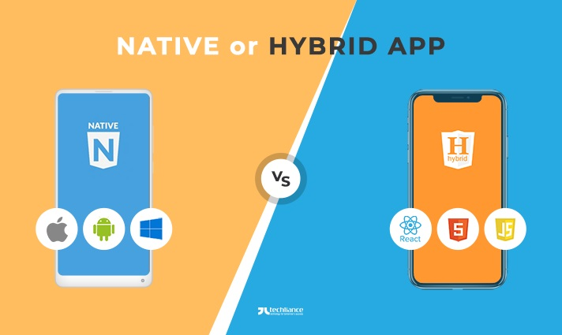

PRODUCT . July 24, 2020
Interview -- What it's like
to work remotely in big-sized product development?
People say that developing products isn't easy. Neither it is to build long-distance relationships. But, how about doing both, simultaneously
Bruno Teixeira
Lead Product Owner

DEVELOPMENT - July 2,2020
Hybrid vs. Native -- Here is how you can choose one over the other
There is no denying it,hybrid mobile development is booming and becoming the main option xhen considering developing a mobile application due to the lower costs and faster development time.
DEVELOPMENT - July 2,2020
From monlithic to headless : how and why you should adapt your WordPress stack
Every dynamic website consist of two main parts: the backend and the frontend. The backend, which marketing websites is commonly a Content Management System(CMS). allows the website owners...